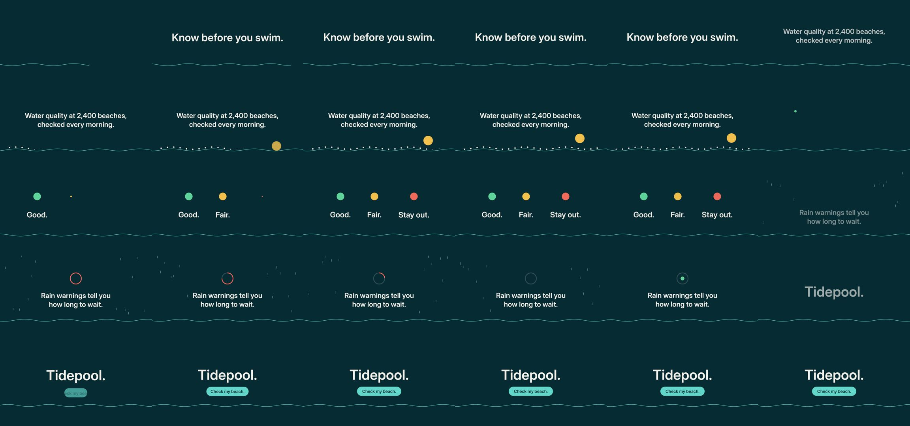

diffusionstudio/lottie: test run, 2026-10-11
The same brief for every skill: a 15-second promo for a made-up app, five fixed lines of on-screen copy, 1920 x 1080 at 30 frames per second. Claude Code (Claude Opus 5.5) made it with the skill in a throwaway sandbox with no API keys for video, image or voice models. 5.6 minutes; sound: no. All results · The brief · How it is checked
The four checks
| Renders to a playable file | pass | H.264 |
|---|---|---|
| Length, size and frame rate as asked | pass | 15.0 s, 1920x1080, 30.0 fps |
| All five lines readable | pass | 5 of 5 |
| The picture moves | pass | 34% of sampled frame pairs held still |
Frames sampled twice a second

How it was made (the session's closing message)
I made the video with the installed `text-to-lottie` skill. It's a Lottie scene played by the skill's own Skia Skottie player, with no API keys or paid models. It's H.264, 1920×1080, 30 fps, 450 frames, exactly 15.0 seconds, with no audio. **What it looks like:** a deep teal background with a single aqua wave line along the bottom that moves for the whole 15 seconds. Each line of your copy appears in order, word for word: 1. **0–2.5 s:** "Know before you swim." rises in large type as the wave line draws across. 2. **2.5–5.5 s:** "Water quality at 2,400 beaches, checked every morning." A row of dots (the beaches) pops up along the wave and a sun rises on the right. 3. **5.5–8.5 s:** "Good." "Fair." "Stay out." come in one at a time, each under a green, amber or coral dot. 4. **8.5–11.5 s:** "Rain warnings tell you how long to wait." Rain falls on both sides of the text while a coral ring empties and then turns into a green dot. 5. **11.5–15 s:** "Tidepool." then "Check my beach." on an aqua button, held to the end. There are no other words, logos or claims. The two longer lines are split across two lines of text, but the wording is unchanged. **How it was built and checked:** - The project is in `~/work/project` (a copy of the skill's player). The scene is `public/projects/tidepool/scene-1/` and is generated by `tidepool-build/build.py`. - The skill has no video export, so I wrote `tidepool-build/render.mjs`. It draws each frame with the same rendering library the player uses and pipes the frames to ffmpeg. - I compared still frames from the player with the same frames from the MP4 and they match. I also checked the frames where one beat hands over to the next. Two fixes came out of that: the timer ring was emptying too fast, and rain was crossing the text. - I made the bold Inter font file from the variable Inter font that ships with the player. That needed fonttools, which I installed into a temporary Python environment in `/tmp`. DELIVERABLE: ~/work/output/video.mp4